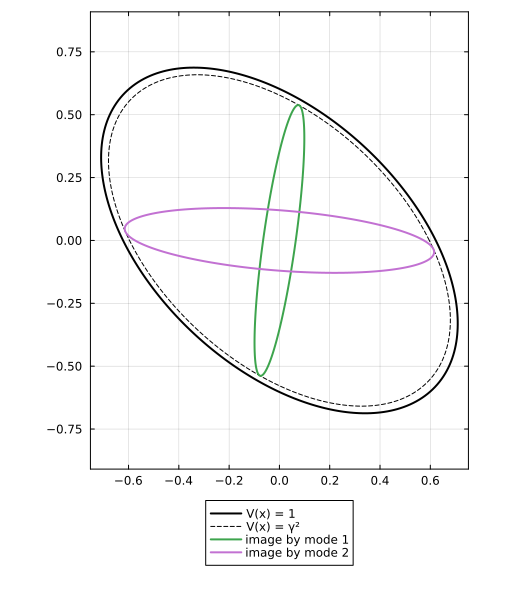
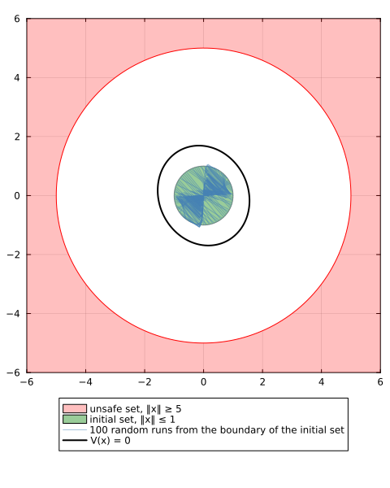
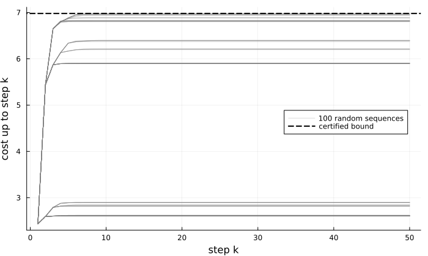

How a certificate works
certify(template, graph, problem) takes three arguments:
- the template: the family the node functions are drawn from.
- the graph: one node function per node, and one edge inequality per edge, between the functions of its two nodes.
- the problem, built from the system: what you want to prove, which sets the form of the inequalities and the objective.
The problem is given. The template and the graph are your two choices, and they influence both how good the certificate can be and how much it costs to compute. This page defines a path-complete certificate and its common certificate, which shows why the certificate holds for every switching sequence. It then certifies the three problems of the running example with the same template and graph, and ends with how the package writes their conditions as set inclusions.
The code on this page uses the running example of Systems and problems: system, controlled, the sets S0 and Su, and the costs Q and R, solved with Clarabel.
The template and the graph
The template $\mathcal{V}$ is a parametrized family of functions. Here it is QuadraticTemplate: the quadratic forms $V(x) = x^\top P x$, with $P$ symmetric. Each problem adds its own conditions.
The graph $G = (S, E)$ is a directed graph whose edges carry modes: the edge $(s, d, i) \in E$ goes from its source $s$ to its destination $d$ and is labelled by mode $i$. It must be path-complete: every sequence of modes is read along some path of the graph. Here, common_graph has one node and a loop per mode.
template = QuadraticTemplate()
graph = common_graph(system)Path-complete certificates
A path-complete certificate on $G$ is a family $\{V_s\}_{s \in S}$ of functions of the template, one node function per node, such that:
- an edge inequality, between $V_s$ and $V_d$ through mode $i$, holds for every $x$ and every edge $(s, d, i)$.
- node conditions hold on each $V_s$, when the problem has them, such as positive definiteness.
Every sequence of modes is read along a path of the graph, so the edge inequalities chain along every trajectory, whatever the switching.
The common certificate
The node functions combine into one function of the state, built in the same way for the three problems, the common certificate $V$. On two kinds of graphs, it is simple (Philippe et al., 2019; Cor. III.3):
- on a complete graph, $V = \min_s V_s$.
- on a co-complete graph, $V = \max_s V_s$.
Choosing a graph defines complete and co-complete graphs. On any path-complete graph, $V$ is a minimum of maxima of node functions, over the sets of nodes that the observer_graph gives (Philippe et al., 2019; Thm. III.8). certificate(x) evaluates $V$.
Path-completeness turns the edge inequalities into one inequality on $V$, for every mode: $V$ is a classical certificate, one function for the whole system, though in general not one of the template.
The three problems
Only the node conditions and the edge inequality change from one problem to another:
| Problem | Node conditions on $s$ | Edge inequality on $(s, d, i)$ | Certifies |
|---|---|---|---|
| stability | $V_s$ positive definite | $V_d(A_i x) \le \gamma^\delta \, V_s(x)$ | $\rho(\mathcal{A}) \le \gamma$ |
| safety | $V_s \le 0$ on $X_0$, $V_s > 0$ on $X_u$ | $V_d(A_i x) \le V_s(x)$ | no trajectory from $X_0$ reaches $X_u$ |
| optimal control | $V_s$ positive definite | $V_s(x) \ge \ell(x, K_s x) + V_d\big((A_i + B_i K_s) x\big)$ | $J_\phi(x) \le V(x)$ for every $x$ |
Systems and problems defines the joint spectral radius $\rho(\mathcal{A})$, the sets $X_0$ and $X_u$, the stage cost $\ell$ and the worst-case cost $J_\phi$. For stability, $\gamma$ is the rate and $\delta$ the degree of the node functions, $V(c x) = c^\delta V(x)$ for $c > 0$: 2 for quadratic and piecewise quadratic functions, $2r$ for sums of squares, 1 for polyhedral functions. For optimal control, each node also carries a gain $K_s$, and the gains define the policy $\phi$ of the certificate.
Quality and cost of a certificate
certify finds the best certificate on the graph by solving convex programs built from its three arguments:
- The template gives the variables: the parameters of one node function, such as the matrix $P$ of $x^\top P x$.
- The graph gives the structure: one copy of these variables per node, and one edge inequality per edge.
- The problem gives the content: the node conditions and the edge inequality of the table above, the objective, and its own unknowns: the rate, the margin or the gains.
An edge inequality must hold for every state $x$: it is infinitely many constraints. The package writes it as an inclusion between sets of the node functions (see Conditions as set inclusions), which SetProg.jl turns into finitely many convex constraints on the parameters of the template. For quadratic forms, for instance, $V_d(A_i x) \le \gamma^2 V_s(x)$ for every $x$ is the matrix inequality $A_i^\top P_d A_i \preceq \gamma^2 P_s$. These constraints set the kind of program, linear, second-order cone or semidefinite (see What works with what).
So the template and the graph influence:
- how good the certificate can be: it is the optimum of the program, the best that the functions of the template can give on the graph.
- how much it costs to compute: the template sets the kind of program and the size of each variable and constraint, and the graph sets how many there are.
The two pull against each other. A richer template, such as the sums of squares of degree 4 instead of the quadratic forms (see Choosing a template), or a graph with more nodes, such as a De Bruijn graph of higher order (see Choosing a graph), can give a better certificate, but builds a larger program: more variables at each node, or more nodes and edges.
For stability on the running example, the program has one quadratic form, so three parameters, one $2 \times 2$ linear matrix inequality per mode, and a third for the normalization $P \succeq I$. optimization_model builds the program without solving it.
Stability
The node functions form a path-complete Lyapunov certificate (Ahmadi et al., 2014). The program:
\[\begin{aligned} \min_{V_s,\ \gamma} \quad & \gamma \\ \text{subject to} \quad & V_d(A_i x) \le \gamma^\delta \, V_s(x) \quad \forall x && \text{for every edge } (s, d, i), \\ & V_s \text{ positive definite} && \text{for every node } s. \end{aligned}\]
At a fixed rate the program is convex, so certify finds the smallest rate by bisection:
problem = StabilityProblem(system)
certificate = certify(template, graph, problem; optimizer = Clarabel.Optimizer)
certificate.rate0.9586944580078125The rate is an upper bound on the joint spectral radius (Ahmadi et al., 2014; Thm. 2.4), below one, so the system is stable.
Why it holds. The common certificate satisfies $V(A_i x) \le \gamma^\delta \, V(x)$ for every mode $i$: it is a common Lyapunov function, so the state shrinks at least like $\gamma^k$, up to a constant factor, for every switching sequence. On a complete graph, for instance, take a node $s$ minimizing $V_s(x)$: the edge that leaves $s$ with mode $i$ ends at some node $d$, so $V(A_i x) \le V_d(A_i x) \le \gamma^\delta \, V_s(x) = \gamma^\delta \, V(x)$.
In a picture, the inclusion $(A_i / \gamma) \, \Omega \subseteq \Omega$ on the common graph: each mode maps the unit set $\Omega$ of $V$, bounded by $V(x) = 1$, inside $\gamma \, \Omega$, bounded by $V(x) = \gamma^2$, since $\delta = 2$ here.

Both images touch the dashed curve: at the smallest rate, the inequalities are tight. Reading a certificate shows how to find the tight edges.
Safety
The node functions form a path-complete barrier certificate (Anand et al., 2024). The program:
\[\begin{aligned} \max_{V_s,\ \varepsilon} \quad & \varepsilon \\ \text{subject to} \quad & V_d(A_i x) \le V_s(x) \quad \forall x && \text{for every edge } (s, d, i), \\ & V_s \le -\varepsilon \, w \text{ on } X_0, \quad V_s \ge \varepsilon \, w \text{ on } X_u && \text{for every node } s, \\ & -w \le V_s \le w && \text{for every node } s. \end{aligned}\]
A barrier changes sign, so it is not homogeneous. With the quadratic template, it is $V_s(x) = [x; 1]^\top P_s [x; 1]$, with $P_s$ symmetric, possibly indefinite. With SumOfSquaresTemplate(r), it is a polynomial of degree at most $2r$. With the piecewise quadratic template, it is $x^\top P_{s,k} x - 1$ on each cone, with $P_{s,k}$ positive semidefinite.
The margin $\varepsilon$ measures how well the barriers separate $X_0$ from $X_u$. Scaling the barriers would scale the margin, so the last condition bounds them. The weight $w(x) = (1 + \|x\|^2)^r$ is that of the quadratic and sum-of-squares templates, with $r = 1$ for quadratic forms. The other templates bound their barriers in their own way, so a margin compares graphs for one template, not templates with each other.
The node conditions are imposed with the S-procedure, which is sufficient but not necessary, or with second-order cone constraints for the polyhedral templates. On the running example:
problem = SafetyProblem(system, S0, Su)
certificate = certify(template, graph, problem; optimizer = Clarabel.Optimizer)
certificate.margin0.2823863037804371The margin is positive, so the system is safe.
Why it holds. The common certificate is negative on $X_0$, positive on $X_u$, and satisfies $V(A_i x) \le V(x)$ for every mode $i$: it is a common barrier function. Along a trajectory that starts in $X_0$, $V$ stays negative, so the trajectory never reaches $X_u$.
In a picture, the inclusions on the common graph: the zero sublevel set $\Omega$ of $V$ contains $X_0$ and does not meet $X_u$, and the runs that start on the boundary of $X_0$ never leave $\Omega$.

Optimal control
Each node carries a positive definite node function $V_s$ and a feedback gain $K_s$ (Ninite et al., 2026). The program:
\[\begin{aligned} \min_{V_s,\ K_s} \quad & \textstyle\sum_s \mu(V_s) \\ \text{subject to} \quad & V_s(x) \ge \ell(x, K_s x) + V_d\big((A_i + B_i K_s) x\big) \quad \forall x && \text{for every edge } (s, d, i), \\ & V_s \text{ positive definite} && \text{for every node } s, \end{aligned}\]
where $\mu(V_s)$ measures the size of $V_s$, such as $\log\det P_s$ for a quadratic form $V_s(x) = x^\top P_s x$: minimizing it keeps the bound small.
The edge inequality is not convex in $V_s$ and $K_s$ together. With the quadratic template, the change of variables to $P_s^{-1}$ and $K_s P_s^{-1}$ makes it a linear matrix inequality, so certify computes both. With the other templates, the gains are fixed: by default, certify takes those of the quadratic certificate, and its keyword gains, one matrix per node, gives others. For fixed gains, the edge inequality is convex in the node functions, as an inclusion of their unit sets (see Conditions as set inclusions).
certify returns the gains, which define the policy of the certificate,
\[\phi(x) = K_{\kappa(x)} \, x, \qquad \kappa(x) \in \arg\min_{s \in S} V_s(x):\]
at each state, apply the gain of the node whose function is smallest there. Calling the certificate at a state gives the bound on the worst-case cost of this policy from it:
problem = OptimalControlProblem(controlled, Q, R)
# Clarabel's chordal decomposition fails on optimal control.
optimizer = () -> Clarabel.Optimizer(chordal_decomposition_enable = false)
certificate = certify(template, graph, problem; optimizer)
certificate([1.0, 1.0])6.978006090693552From $(1, 1)$, the policy costs at most this bound, whatever the switching.
Why it holds. Here the graph must be complete, with an edge for every mode out of every node, which is stronger than path-complete. The common graph is complete, with its loop for every mode. The common certificate is then the minimum $V = \min_s V_s$, and at $x_k$ the policy applies $u_k = K_s x_k$, with $s = \kappa(x_k)$ attaining it. Whatever mode occurs, an edge leaves $s$ with it, and its inequality bounds the stage cost by $V(x_k) - V(x_{k+1})$. Added up, the stage costs are at most $V(x_0)$, for every switching sequence: $V$ bounds the worst-case cost $J_\phi$ of the policy, and so also the robust value function $J^\star$, the best worst-case cost that any policy can achieve.
In a picture: the cost of the policy along 100 random sequences, from $(1, 1)$, stays below the certified bound.

Conditions as set inclusions
You do not need this section to use the package. It explains how the package imposes the conditions of the three problems, and what a new template must support (see Extending the package).
The package does not impose the conditions of a problem as inequalities between functions. It writes each one as an inclusion between sets of the node functions, and SetProg.jl reformulates the inclusion for each template (Legat and Jungers, 2023). A problem is therefore written once, for every template whose inclusions SetProg.jl supports.
Three notions turn inequalities into inclusions:
- The unit set. A function $V$, nonnegative and positively homogeneous of degree $\delta$, is determined by its unit set $\Omega = \{x : V(x) \le 1\}$: $V(x) = g_\Omega(x)^\delta$, with $g_\Omega$ the gauge of $\Omega$ (see Systems and problems). Two such functions of the same degree satisfy $V(x) \ge W(x)$ for every $x$ exactly when the unit set of $V$ is contained in that of $W$.
- The preimage. $A^{-1} \Omega = \{x : A x \in \Omega\}$ is the unit set of $V(A x)$, for any matrix $A$.
- The polar. For a closed convex set $C$ containing the origin, $C^\circ = \{y : y^\top x \le 1 \text{ for all } x \in C\}$. It reverses inclusions, $C \subseteq D$ exactly when $D^\circ \subseteq C^\circ$, so SetProg.jl can impose an inclusion on the sets or on their polars, whichever keeps the template tractable.
Each problem then reads:
| Problem | Set $\Omega_s$ | Inclusions | With quadratic forms |
|---|---|---|---|
| stability | $\{x : V_s(x) \le 1\}$ | $(A_i / \gamma) \, \Omega_s \subseteq \Omega_d$ | $\gamma^2 P_s - A_i^\top P_d A_i \succeq 0$ |
| safety | $\{x : V_s(x) \le 0\}$ | $X_0 \subseteq \Omega_s$, $\Omega_s \cap X_u = \emptyset$, $A_i \Omega_s \subseteq \Omega_d$ | the S-procedure in $[x; 1]$ |
| optimal control | $\{x : V_s(x) \le 1\}$ | $\Omega_s \subseteq (A_i + B_i K_s)^{-1} \Omega_d \mathbin{\hat{+}_\delta} \mathcal{Q} \mathbin{\hat{+}_\delta} K_s^{-1} \mathcal{R}$ | $P_s \succeq Q + K_s^\top R K_s + (A_i + B_i K_s)^\top P_d (A_i + B_i K_s)$ |
- Stability. The edge inequality reads $V_d\big((A_i / \gamma) x\big) \le V_s(x)$, so the unit set of $V_s$ is in the preimage of $\Omega_d$ by $A_i / \gamma$. For quadratic forms, the unit sets are ellipsoids, and the inclusion is a matrix inequality.
- Safety. A barrier is not homogeneous, and only its sign matters, so $\Omega_s$ is its zero sublevel set. The first two inclusions are the node conditions, and the edge inequality implies the third. Together they prove safety: along a path of the graph, a trajectory from $X_0$ stays in the sets $\Omega_s$, which do not meet $X_u$.
- Optimal control. A matrix $Q$ stands for the ellipsoid $\{x : x^\top Q x \le 1\}$, whose gauge is $\sqrt{x^\top Q x}$, so every cost of Systems and problems reads $\ell(x, u) = g_{\mathcal Q}(x)^p + g_{\mathcal R}(u)^p$, with $p = 2$ for the quadratic cost. With node functions of the same degree $\delta = p$, the right side of the edge inequality is a sum of $\delta$-th powers of gauges: of $\mathcal Q$, of $K_s^{-1} \mathcal R$ and of $(A_i + B_i K_s)^{-1} \Omega_d$, all at $x$. For closed convex sets $C$ and $D$ containing the origin and $\delta \ge 1$, the polar $L_\delta$ sum $C \mathbin{\hat{+}_\delta} D$ is the set whose gauge $g$ satisfies $g^\delta = g_C^\delta + g_D^\delta$ (Gardner et al., 2013). So, for convex node functions, the edge inequality is the inclusion of the table. For fixed gains, it is convex in the sets $\Omega_s$. For ellipsoids, the polar $L_2$ sum adds the matrices.
Next
The template and the graph are your two choices: see Choosing a template and Choosing a graph. Then Reading a certificate explains what certify returns. Not every combination is supported: see What works with what.